The editor shows the pages of the document's standard. For a Healthcare LOM record it has twelve form pages, the Document Tree and the XML and JSON source pages; this reference lists the sections and fields of each of them. For the meaning and permitted values of each HLOM element, follow the links to the HLOM Guide or press Shift+F1 in a field. Documents of the other MedBiquitous standards have the pages described in Pages of the other standards.
| Navigation group | Pages |
|---|---|
| Overview | Overview |
| Description | General, Life Cycle, Educational, Rights, Classification, Relation, Annotation |
| Healthcare | Healthcare Education, Healthcare Asset |
| Record | Meta-Metadata, Technical |
| Source | Document Tree, XML, JSON |
Summary, completeness and validation status of the record. The page is read-only; its links open the page where something can be added.
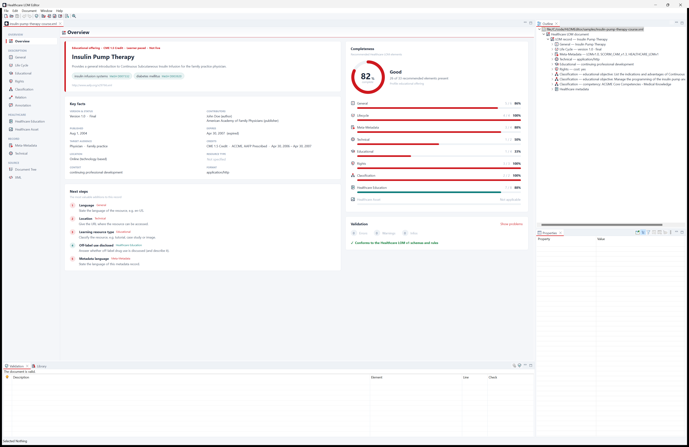
| Section | Contents |
|---|---|
| Summary card | The kind of record (for example “Educational offering · CME 1.5 Credit · Learner paced” or “Medical image asset”), title, description, languages and the keywords, with MeSH-coded keywords highlighted. Add a title appears when the title is missing. |
| Key facts | Version & status, Contributors, Published, Resource type, Context, Format; for educational offerings also Expires, Target audience, Credits and Location; for assets Image. Facts that are Not specified link to their page. |
| Completeness | A score of the recommended Healthcare LOM elements (based on the HLOM specification) rated Excellent (90 or more), Good (70 or more), Fair (45 or more) or Needs work, with a progress bar per category and the missing elements in its tooltip. Categories that don't apply to the record are marked Not applicable. |
| Validation | The number of errors, warnings and infos and the first problems (click one to go to it), or “Conforms to the Healthcare LOM v1 schemas and rules”. Show problems opens the Validation view. |
| Next steps | The most valuable additions to this record, each linking to its page. |
| Section | Fields |
|---|---|
| Title and Description | Title (multilingual), Description (list), Keywords (list with Look Up…), Coverage (list) |
| Identification | Identifiers (master/detail): Catalog, Entry |
| Characteristics | Languages, Structure, Aggregation level |
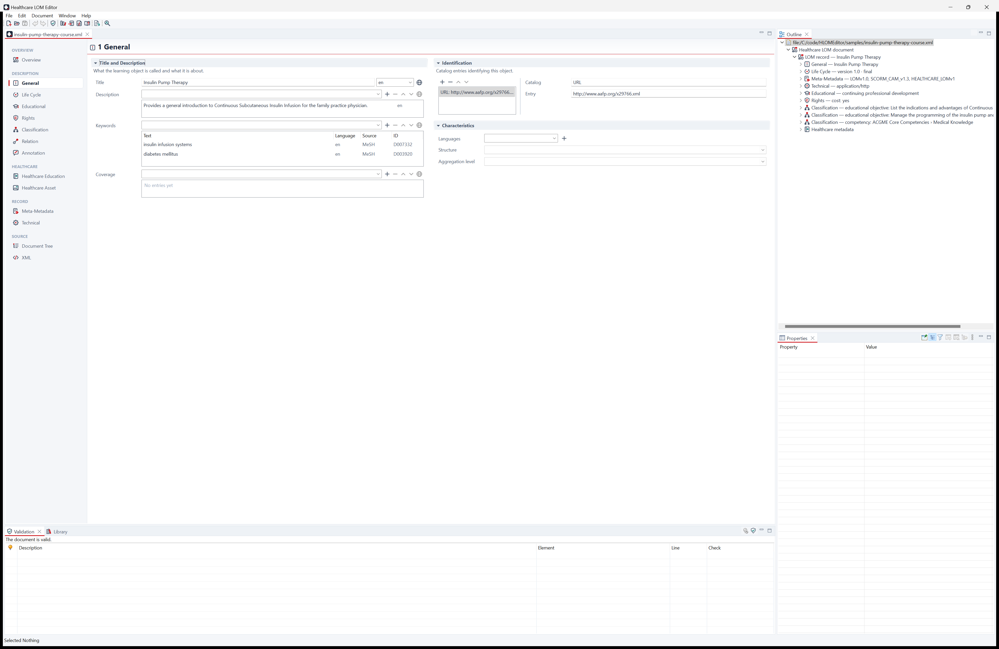
Guide: General.
| Section | Fields |
|---|---|
| State | Version, Status |
| Contributors | Contributions (master/detail): Role, Entities (vCards; Add vCard…), Date, Date description |
Use the publisher's contribution date for the release date and a reviewer's date for the review date. Guide: Life Cycle.
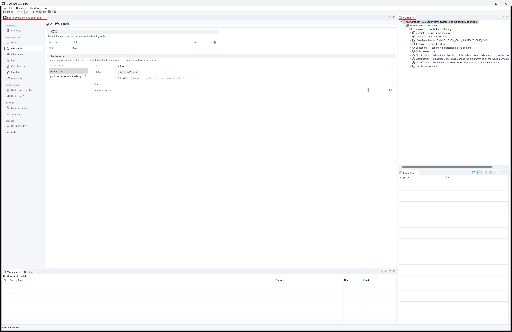
| Section | Fields |
|---|---|
| Educational Uses | One entry per distinct intended use (master/detail): Interactivity type, Learning
resource types (check boxes), Interactivity level, Semantic density, Intended end user roles (check boxes), Contexts
(check boxes), Typical age range, Difficulty, Typical learning time (ISO 8601, e.g. PT45M),
Descriptions, Languages |
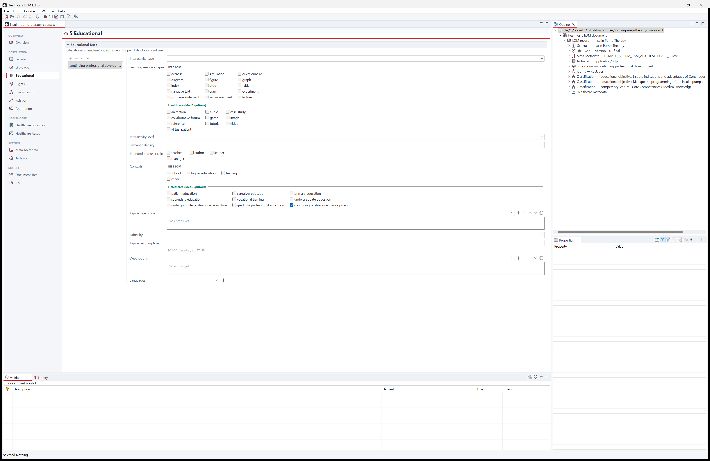
Guide: Educational.
| Section | Fields |
|---|---|
| Conditions of Use | Cost, Copyright and other restrictions |
| Description | Description (comments on the conditions of use) |
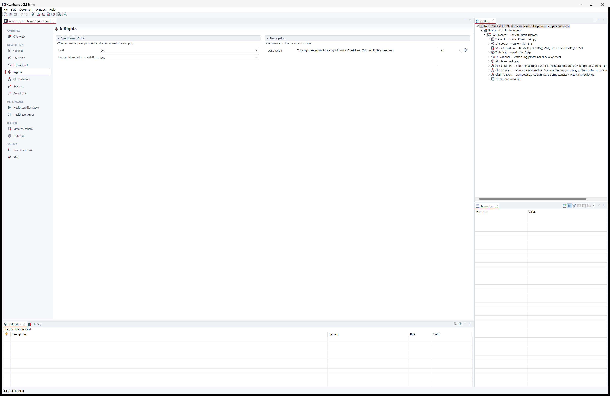
Guide: Rights.
| Section | Fields |
|---|---|
| Classifications | One entry per classification purpose (master/detail): Purpose; Taxon paths, each with Source and Look up in MeSH, ICD-10-CM, ACGME, Bloom's taxonomy or AAMC Curriculum Inventory…, and Taxa (general to specific) with ID and Entry; Description; Keywords |
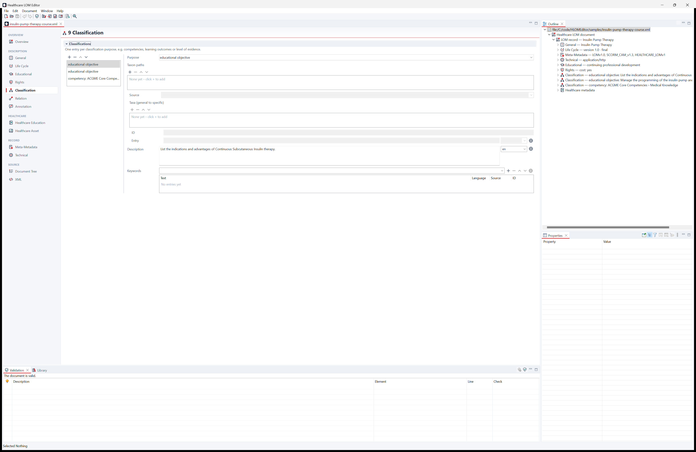
Guide: Classification.
| Section | Fields |
|---|---|
| Relations | Relations (master/detail): Kind; Target Resource with identifiers (Catalog, Entry) and Description |
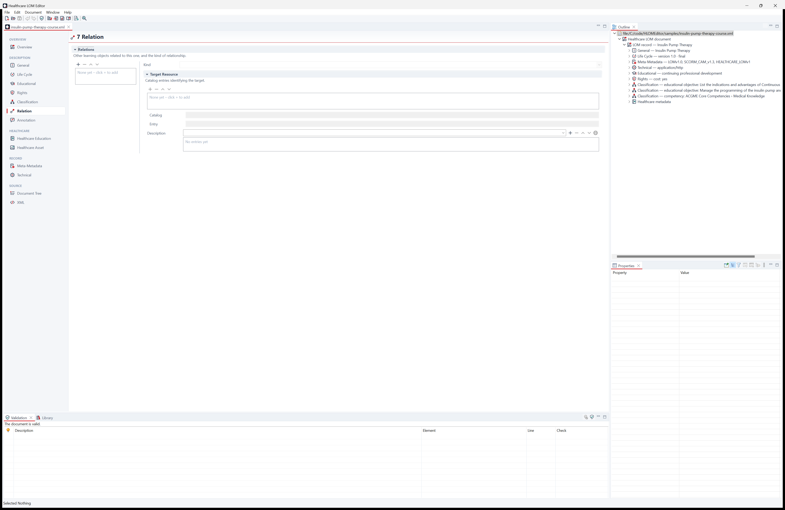
Guide: Relation.
| Section | Fields |
|---|---|
| Annotations | Annotations (master/detail): Entity (vCard text; Compose
vCard…), Date (YYYY-MM-DD), Description |
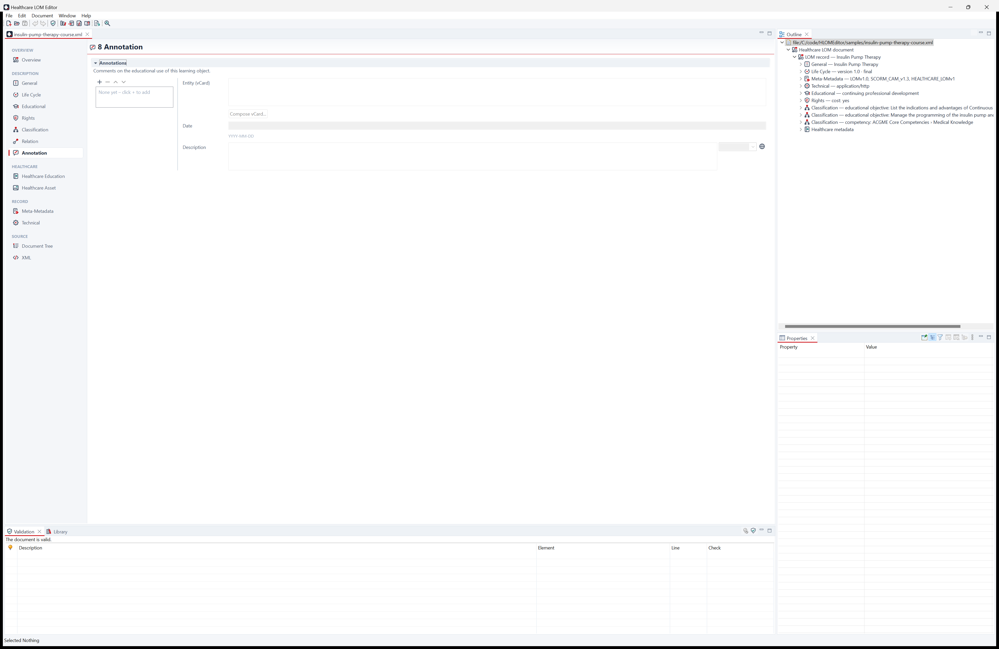
Guide: Annotation.
The MedBiquitous extension for educational offerings (healthcareMetadata/healthcareEducation).
| Section | Fields |
|---|---|
| Educational Offering | Expiration date, Contact, Activity sponsorship, Participation modality, Activity delivery, Activity format |
| Schedule | Start date/time, End date/time (for live activities) |
| Target Audience | Audience categories, Professions, Specialties, Reading levels |
| Disclosures | Off-label use, Off-label description, Commercial support, Acknowledgement, Relevant financial relationship, Disclosures |
| Credits | Credits available; credit entries, one per type of credit (master/detail): Accrediting body, Activity certification, Credit type, Credit unit, Number of credits, Pacing, Accredited provider, Non-accredited providers, Release date, Expiration date |
| Activity Location | Room, Building, Organizations, Street address lines, City, State/province, Postal code, Region, District, Country name, Country code, Address category, Restrictions. The address schema requires a country (name and/or ISO 3166 code) when a location is given. |
Guide: healthcareEducation, credits, credit acronyms.
The MedBiquitous extension for images and other assets (healthcareMetadata/healthcareAsset).
| Section | Fields |
|---|---|
| Subject | Clinical history, Specimen type |
| Image | Medical image type, Annotated, Orientation, Magnification (a whole number, e.g. 100), File width, File height (in pixels) |
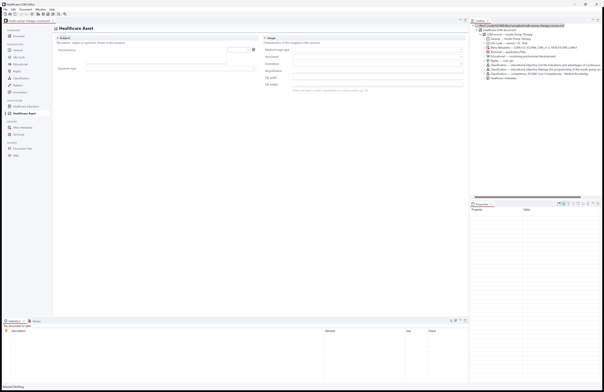
Guide: healthcareAsset.
| Section | Fields |
|---|---|
| Identification | Identifiers of the metadata record (master/detail): Catalog, Entry |
| Schemas and Language | Metadata schemas (Healthcare LOM records list LOMv1.0 and
HEALTHCARE_LOMv1, and SCORM_CAM_v1.3 if applicable), Language |
| Contributors | Persons and organizations that created or validated the record (master/detail): Role, Entities (Add vCard…), Date, Date description |
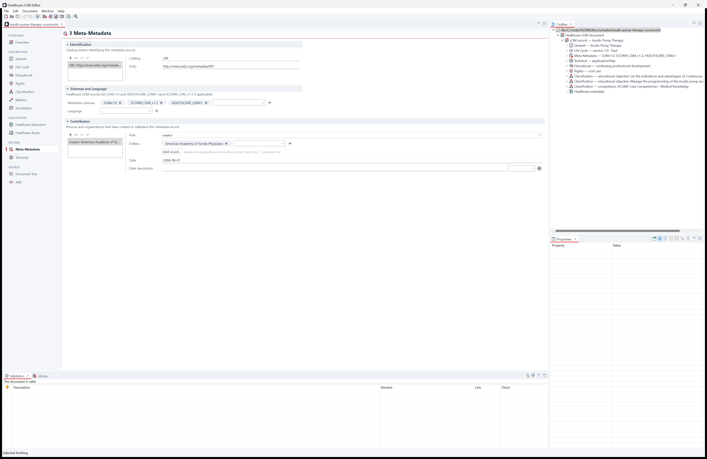
Guide: Meta-Metadata.
| Section | Fields |
|---|---|
| Characteristics | Formats (MIME types), Size (bytes), Locations |
| Duration | Duration (ISO 8601, e.g. PT1H30M), Description |
| Requirements | Requirements (master/detail), each satisfied if any of its Alternatives is: Type, Name, Minimum version, Maximum version |
| Remarks | Installation remarks, Other platform requirements |
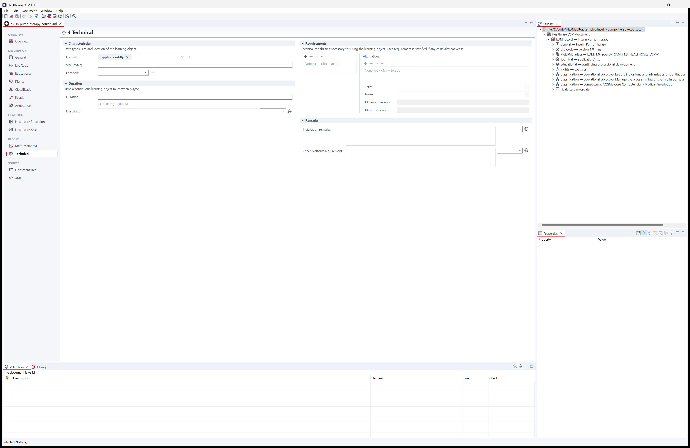
Guide: Technical.
All elements of the document, including custom extension elements. Select an element to edit it in the Properties view; the context menu (and the Document menu) add children and siblings. The Outline view shows the same tree.
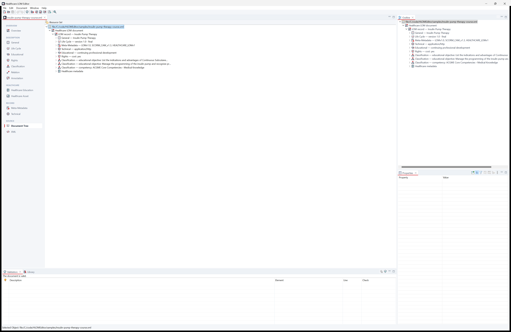
The XML source with syntax highlighting, content assist, live schema checking, quick fixes, formatting, comment toggling, matching-tag highlighting and folding. See Editing XML and JSON.
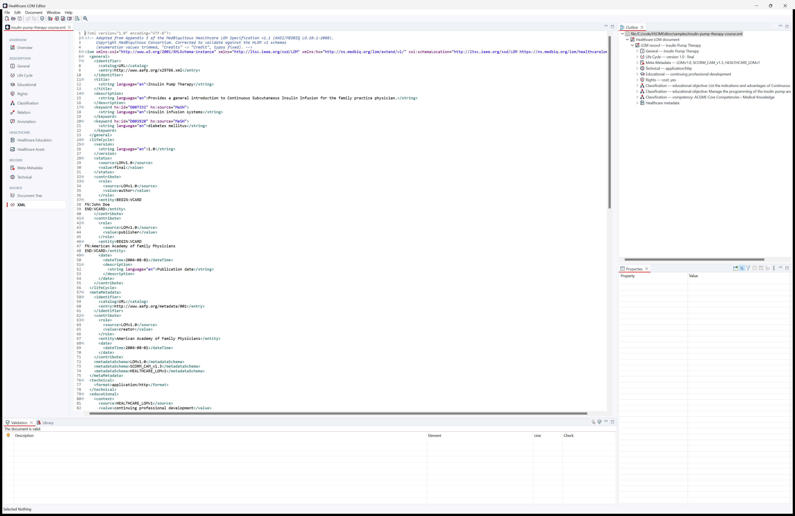
The document in the JSON form of the MedBiquitous Healthcare LOM JSON Schema, with highlighting, content assist, live syntax checking and formatting. See The JSON Format. Healthcare LOM only.
Documents of Curriculum Inventory, Competency Framework, Competency Object, Performance Framework, Activity Report, Medical Education Metrics, MEMS Survey Items, Healthcare Professional Profile and the Virtual Patient standards have these pages:
| Page | Contents |
|---|---|
| Overview | The standard and version, the title and description of the document and a link to the standard on medbiq.org; Contents: the parts of the root element with their counts (or “The document has no content yet.”); Validation: the numbers of errors, warnings and infos and the first problems (click one to go to it). Read-only. |
| Form pages | Defined per standard and grouped in the navigation sidebar. The fields are rendered from the standard's schemas: text, drop-downs for enumerations, date pickers, lists and master/detail blocks for repeated elements, embedded Healthcare LOM descriptions, and hints for formatted text (XHTML) that is edited on the XML page. See Form pages of the other standards and the topic of each standard under The MedBiquitous Standards. |
| Document Tree | All elements of the document, as for Healthcare LOM. |
| XML | The XML source with content assist and hovers from the standard's schemas and live schema checking. No quick fixes. |
There is no JSON page, and the Healthcare LOM tools (MeSH and terminology lookups, quick fixes, completeness) are not available for these documents.